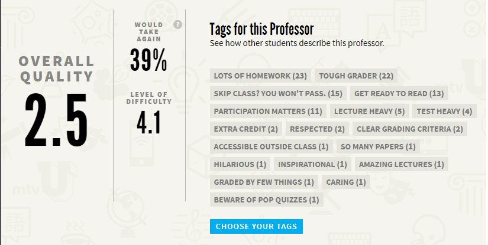
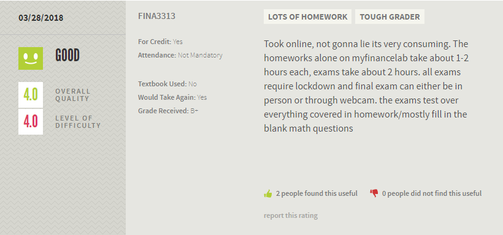
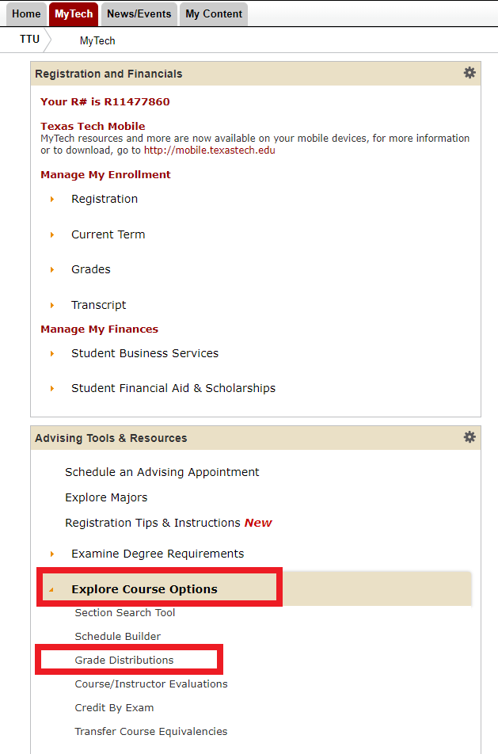
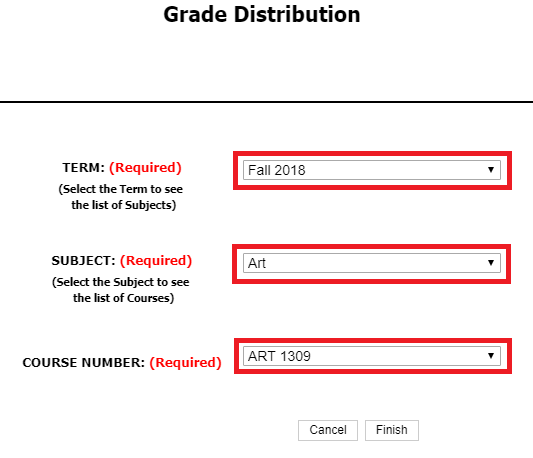
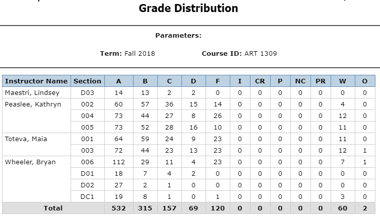
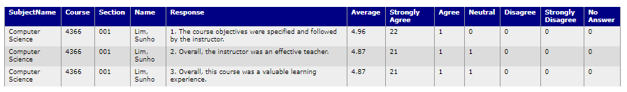

I. Rate My Proffesors
Step 1. Access this website --www.ratemyprofessors.com-- on your favorite browser.
Step 2. In the main page you will have 3 options: a) Find a professor b) Find a school and c) Rate a professor. In this case you will look for a professor by typing his/her name on the search bar.
Step 3. After typing the name you will be prompted with several professors with the same name and you will look for the one of your univerity.
Step 4. After selecting one you will be able to see ratings about the overall quality, level of difficulty, and also some ratings from students which are really helpful.
 
II. Raiderlink: Grade Distributions
Step 1. Access this website --www.raiderlink.ttu.edu-- on your favorite browser. Once there you will login using your eRaider username and password.
Step 2. After login in you will then find the "Adivising Tools & Resources" box, there you will click on "Explore Course Options", and the click on "Grade Distributions".
Step 3. Now select a term, a subject, the course number you are looking for and click on finish.
Step 4. Here you will be able to see the grade distribution for the course based on the different instructors who teached the class on the selected term, which comes in handy for picking the right instructor.

III. Raiderlink: Students Evaluations of Course and Instructor
Step 1. Access this website --www.raiderlink.ttu.edu-- on your favorite browser. Once there you will login using your eRaider username and password.
Step 2. After login in you will then find the "Adivising Tools & Resources" box, there you will click on "Explore Course Options", and the click on "Course/Instructor Evaluations".
Step 3. You will be redirected to another webpage with two links one In-class courses and instructors and one for online courses and instructors. Click on "View results of Student Evaluations of In-Class Courses and Instructors.
Step 4. Now you will choose to search by faculty or course, in this case I will do course, then select a term, select a college, select a department, and finally select a course number and click submit.
Step 5. A table will be shown with students evaluations about the course and instructors for each section.
